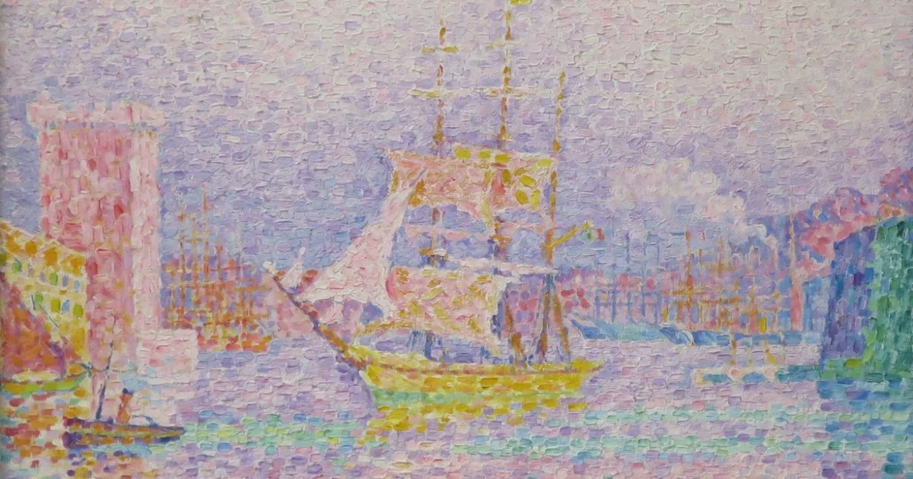

Nesta aula nos vimos sobre o pontilismo, que é a arte de desenhar usando pontos.
Um ponto representa uma posição sem dimensões, marcando o início e o fim de uma linha e onde duas linhas se cruzam.
Ele é uma afirmação concisa e permanente, sendo fundamental na pintura e na arte gráfica.
